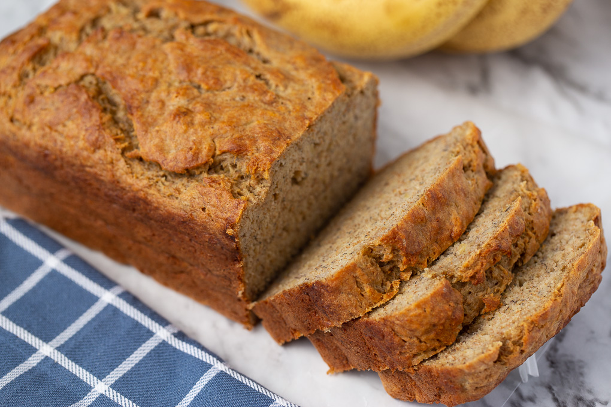

BANAANILEIB
RETSEPT
| Koostisosa |
Kogus |
| Jahu |
500 ml |
| Sooda |
1 tl |
| Sool |
2 tl |
| Sulatatud või |
125 grammi |
| Suhkur |
250 ml |
| Muna |
2 tk |
| Hapukoor |
63 ml |
| Banaan |
2-3 tk |
| Šokolaad |
Pool tahvlit |
- Leia kapist 2 kaussi.
- Sega esimesse kaussi kokku jahu, sooda ja sool.
- Sulata ära või.
- Purusta kahvliga taldrikule banaanid
- Sega teise kaussi kokku sulatatud või, muna, suhkur, hapukoor ja purustatud banaanid.
- Tükelda šokolaad ja lisa teise kaussi.
- Vala mõlemad kausid omavahel kokku ja sega ühtlaselt.
- Vala saadud segu vormi
- Pane vorm ahju 180 kraadiga
- Oota 45 minutit ja banaanileib ongi valmis!

Retsepti allikas
Link: [Youtube link banaanileiva valmistamiseks]